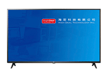
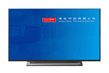
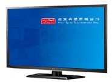
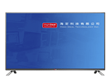

42/43吋液晶電視出租
提供高品質 42/43 吋液晶電視租賃服務，支援 4K UHD 超高解析度顯示，搭載智能系統，適合各類展覽、會議、活動使用。我們的液晶電視具備完整的介面支援，包括 HDMI、USB 等多種連接方式，確保您的顯示需求得到完美滿足。

LG 43吋4K液晶電視
- 支援4K UHD
- 超高解析度3840*2160
- 智能電視作業系統 Android
- 內建網路：RJ-45 & WiFi (802.11ac)
- 聲音輸出：20W
- 介面：HDMI / AV / 色差 / USB 2.0等等
- 支援USB撥放

Toshiba 43吋4K液晶電視
- 支援4K UHD
- 超高解析度3840*2160
- 智能電視作業系統 Android
- 內建網路：RJ-45 & WiFi (802.11ac)
- 聲音輸出：20W
- 介面：HDMI / AV / 色差 / USB 2.0等等
- 支援USB撥放

LG 42吋3D 42LM6200
- 支援Full HD 1080p
- 超高解析度1920*1080
- LED背光
- 動態影像流暢技術：120Hz
- 聲音輸出：10W+10W
- 介面：HDMI / D-Sub / LAN / AV / 色差 / USB 2.0等等
- 支援USB撥放

LG 42吋3D 42LB6500
- 支援Full HD 1080p
- 超高解析度1920*1080
- 動態影像流暢技術：120Hz
- 聲音輸出：20W
- 介面：HDMI / USB 2.0 / LAN / AV / 色差 / 數位音效輸出等等
- 支援USB撥放
租賃說明
- 營業時間：週一至週五 上午10:00 ~ 下午05:00
- 週六及國定假日公休
- 地址：台北市忠孝東路5段165巷3弄30號1樓
- 電話：02-2762-6333
- 傳真：02-2762-9333